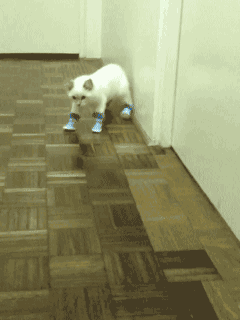

task?Angular,
The Event Loop,
&
You
@erinjzimmer
while (true) {
task = taskQueue.pop();
execute(task);
}
What's a
<script>
const foo = bar;
foo.doSomething();
document.body.addEventListener('keydown', (event) => {
if (event.key === 'PageDown') {
location.href = "/#/36";
}
});
</script>
What does
execute(task) do?
while (true) {
task = taskQueue.pop();
execute(task);
}
Long running tasks can make your page run like...

function veryLongTask() {
firstPartOfTask();
setTimeout(restOfTheTask);
}
while (true) {
task = taskQueue.pop();
execute(task);
if (isRepaintTime()) repaint();
}
An event loop has one or more task queues.
bool did_work = delegate->DoWork();
if (!keep_running_)
break;
did_work |= delegate->DoDelayedWork(&delayed_work_time_);
if (!keep_running_)
break;
if (did_work)
continue;
did_work = delegate->DoIdleWork();
if (!keep_running_)
break;
- Queues can be executed in any order
- Tasks in the same queue must be executed in the order they arrived
- Tasks from the same source
must go in the same queue
while (true) {
queue = getNextQueue();
task = queue.pop();
execute(task);
if (isRepaintTime()) repaint();
}
Image by Pete Markham
vs
Microtasks
while (true) {
queue = getNextQueue();
task = queue.pop();
execute(task);
while (microtaskQueue.hasTasks())
doMicrotask();
if (isRepaintTime()) repaint();
}
Animation Frame Callback Queue
requestAnimationFrame(callback);
requestAnimationFrame(() => {
this.browser.classList.remove('slide');
requestAnimationFrame(() => {
this.browser.classList.add('slide');
});
});
this.browser.classList.remove('slide');
this.browser.classList.add('slide');
 Demo
Demo
while (true) {
queue = getNextQueue();
task = queue.pop();
execute(task);
while (microtaskQueue.hasTasks())
doMicrotask();
if (isRepaintTime()) {
animationTasks = animationQueue.copyTasks();
for (task in animationTasks)
doAnimationTask(task);
repaint();
}
}
What does this have to do with
?
<ul>
<li>Tyrannosaurus Rex</li>
<li>Velociraptor</li>
<li>Triceratops</li> <li>Brontosaurus</li></ul>const dinosaurs = [
'Tyrannosaurus Rex',
'Velociraptor',
'Triceratops',
'Brontosaurus'
];
?
setState(updatedState);
const app = new Vue({
name: 'Dr Ellie Sattler'
});
Object.defineProperty(
app,
'items',
{ get: () => this._name,
set: (value) => {
this._name = value;
runChangeDetection();
}
}
);
ZONE.JS
A Zone is an execution context that persists across async tasks.
You can think of it as thread-local storage for JavaScript VMs.
https://github.com/angular/zone.js/README.md
A Zone is a mechanism for intercepting and keeping track of work.
In its simplest form a Zone allows one to intercept the scheduling and calling of asynchronous operations, and execute additional code before as well as after the asynchronous code.
zone.js/lib/zone.ts
window.setTimeout(callback, delay)
const nativeTimeout = window.setTimeout;
window.setTimeout =
function (callback, delay) {
nativeTimeout(() => {
preTaskCallback();
callback();
postTaskCallback();
}, delay);
}
const nativeTimeout = window.setTimeout;
window.setTimeout =
function (callback, delay) {
nativeTimeout(() => {
callback();
runChangeDetection();
}, delay);
}
- setTimeout & setInterval
- addEventListener & onClick, etc
- XMLHttpRequest & FileReader
- Promises & requestAnimationFrame
- registerElement/IDB/WebSocket/MutationObserver
platformBrowserDynamic().bootstrapModule(AppModule);
ngZone.run()
How does this affect me as an Angular developer?
Short answer - it doesn't. You can write perfectly good Angular
code without knowing any of this stuff. There is, however, one
little trap that you should probably be aware of
Testing
Tests don't run in the ngZone, so you don't get any automatic change detection
On the one hand, this is a good thing, because it means your tests run
faster.
it('should add a new list item', () => {
component.dinosaurs.push('Brontosaurus');
expect(listItems[3]).toBe('Brontosaurus');
});
Expected undefined to be 'Brontosaurus'

On the other hand, this can be a bit of a nuisance, because you can't test
any functionality that changes the DOM
fixture.detectChanges()
Luckily, the Angular team though of this and provided you with a way to
kick off the change detection manually
it('should add a new list item', (done) => {
component.dinosaurs.push('Brontosaurus');
fixture.detectChanges().then(() => {
expect(listItemElements[3]).toBe('Brontosaurus');
done();
});
});
fakeAsync
it('should flush microtasks before returning', () => {
let thenRan = false;
fakeAsync(() => {
resolvedPromise.then(_ => { thenRan = true; });
})();
expect(thenRan).toEqual(true);
});
it('should add a new list item', (done) => {
component.dinosaurs.push('Brontosaurus');
fixture.detectChanges().then(() => {
expect(listItemElements[3]).toBe('Brontosaurus');
done();
});
});
The fakeAsync zone also provides you with functions
that give you fine-grained control over how tasks are executed within the zone
Can't wait til the end of your task for all your promise callbacks to be run?
Use flushMicrotasks to run them any time you like!j
Performance
Thanks!
@erinjzimmer
sometimes peeking under the covers of something big and complicated can give you a really good idea of how it works